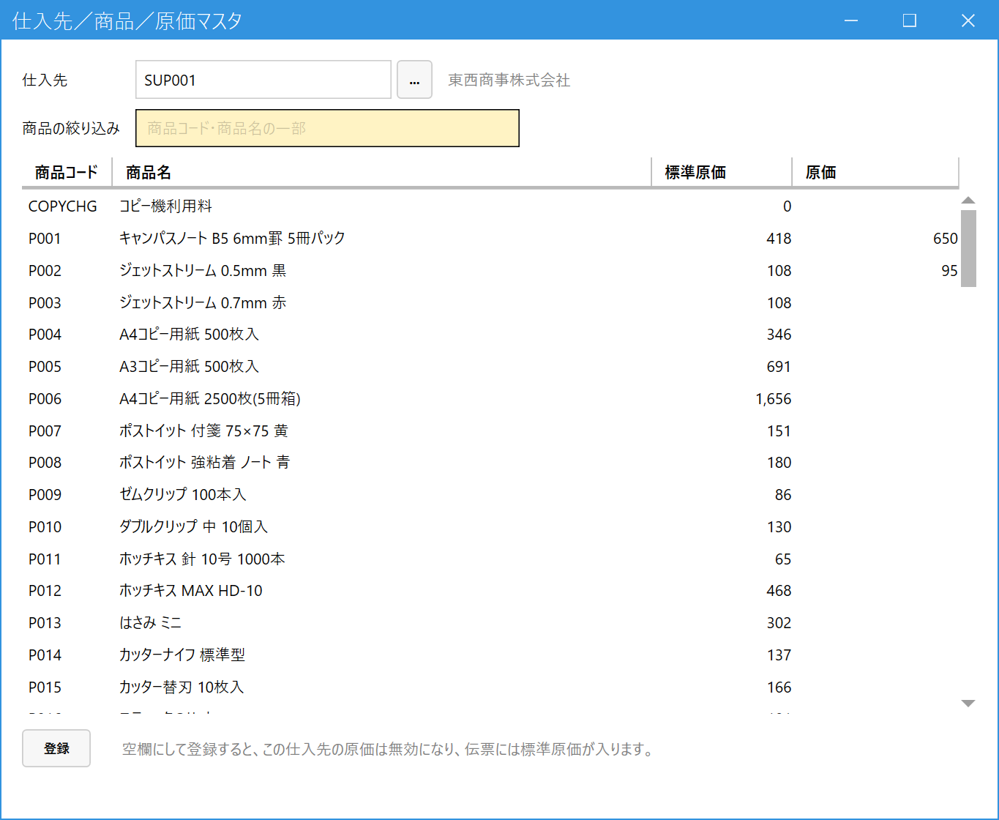

仕入先ごとの原価を設定する（仕入先／商品／原価マスタ）
こんなときに使います
「同じ商品でも、仕入先によって仕入れ値（原価）が違う」とき、仕入先×商品ごとの原価を登録します。
登録すると、受注・売上の明細で仕入先が決まったとき、その原価が自動で入ります（粗利の計算に使われます）。商品マスタの行を、仕入先ごとに増やす必要はありません。
「同じ商品でも、仕入先によって仕入れ値（原価）が違う」とき、仕入先×商品ごとの原価を登録します。
登録すると、受注・売上の明細で仕入先が決まったとき、その原価が自動で入ります（粗利の計算に使われます）。商品マスタの行を、仕入先ごとに増やす必要はありません。
1.原価が決まる順番
受注入力・売上入力の明細に商品を入れたとき、または明細の仕入先を変えたとき、原価は次の順で探して、最初に見つかったものが入ります。
- この画面で登録した、その明細の仕入先×商品の原価
- 商品マスタの標準原価（仕入先が空欄のときも、こちらです）
明細に最初に入る仕入先は、商品マスタの主仕入先です。主仕入先が空欄の商品は、仕入先なし（標準原価）で始まります。明細の仕入先を別のものに変える方法は、受注入力・売上入力を見てください。
2.仕入先を選ぶ
メインメニューの「マスタ管理」の中の「仕入先／商品／原価マスタ」を開き、仕入先欄にコードを入れて Enter（Space または「...」で検索）。その仕入先について、有効な商品が全件、一覧に並びます。

- 仕入先：原価を決めたい仕入先。選ぶと、名称がとなりに表示されます。
- 商品の絞り込み：商品コード・商品名の一部で表示を絞ります（表示だけが変わります。隠れた行の入力内容も残ります）。
- 標準原価：商品マスタの標準原価（見るだけ）。原価が空欄の商品は、伝票の明細にこの値が入ります。
- 原価：この仕入先でのこの商品の原価。入力できるのはこの列だけです。登録済みの商品には、その値が出ています。
- 登録：変更した行だけをまとめて保存します。
- 原価を空欄にして登録すると、その仕入先の原価は無効になります（下の「入力して登録する」参照）。
3.入力して登録する
- 原価を入れたい商品の行の原価欄に、数字（0以上）を入力します。
- 登録を押す。成功すると「仕入先 ○○ の原価を登録しました（○ 件）。」と出て、画面は空に戻ります。
- 空欄にして登録すると、その仕入先の原価は無効になります（取り決めをやめるとき）。無効にすると、伝票の明細には標準原価が入ります。0は有効な値です（原価0円、という意味になります）。
- 無効にした行にもう一度値を入れて登録すると、新しい値で有効に戻ります（以前の値は引き継ぎません）。
- 登録していない変更があるまま、仕入先を選び直したり画面を閉じようとすると、「登録していない変更があります。破棄してよろしいですか？」と確認が出ます。「いいえ」を選ぶと、入力した内容が残ります。
- 数字でない値や範囲外の値を入れると、商品コードを示した警告が出て、保存されません。
- 変更した行がないまま登録を押すと、「変更はありません。」と出ます。
登録した原価は、これから入力する伝票の明細に入ります。登録済みの受注・売上の原価は変わりません（伝票の明細には、入力した時点の原価が残ります）。